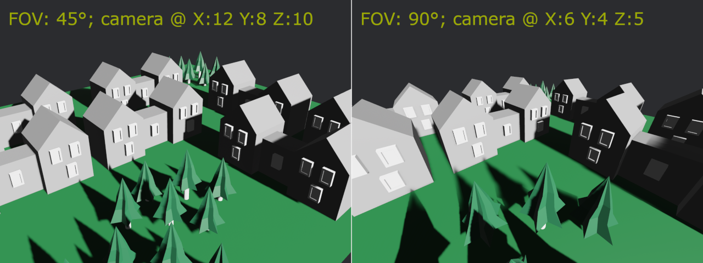
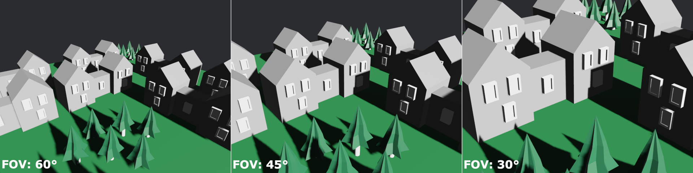
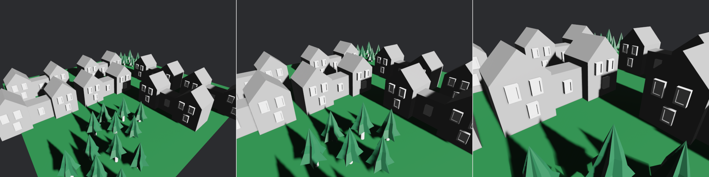
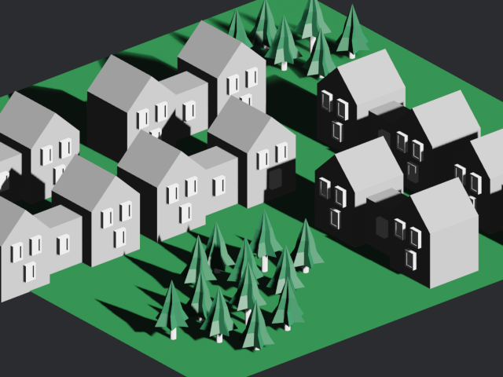
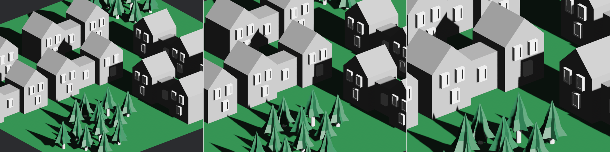

| Bevy Version: | 0.12 | (outdated!) |
|---|
As this page is outdated, please refer to Bevy's official migration guides while reading, to cover the differences: 0.12 to 0.13, 0.13 to 0.14, 0.14 to 0.15, 0.15 to 0.16.
I apologize for the inconvenience. I will update the page as soon as I find the time.
3D Camera Setup
Cameras in Bevy are mandatory to see anything: they configure the rendering.
This page will teach you about the specifics of 3D cameras. If you want to learn about general non-3D specific functionality, see the general page on cameras.
Creating a 3D Camera
Bevy provides a bundle that you can use to spawn a camera entity. It has reasonable defaults to set up everything correctly.
You might want to set the transform, to position the camera.
#[derive(Component)]
struct MyCameraMarker;
fn setup_camera(mut commands: Commands) {
commands.spawn((
Camera3dBundle {
transform: Transform::from_xyz(10.0, 12.0, 16.0)
.looking_at(Vec3::ZERO, Vec3::Y),
..default()
},
MyCameraMarker,
));
}
fn main() {
App::new()
.add_plugins(DefaultPlugins)
.add_systems(Startup, setup_camera)
.run();
}The "looking at" function is an easy way to orient a 3D camera. The second
parameter (which we provide as Y) is the "up" direction. If you want the camera
to be tilted sideways, you can use something else there. If you want to make a
top-down camera, looking straight down, you need to use something other than Y.
Projection
The projection is what determines how coordinates map to the viewport (commonly, the screen/window).
3D cameras can use either a Perspective or an Orthographic projection. Perspective is the default, and most common, choice.
When you spawn a 3D camera using Bevy's bundle
(Camera3dBundle), it adds the
Projection component to your
entity, which is an enum, allowing either projection kind to be
used.
When you are working with 3D cameras and you want to access the projection, you
should query for the Projection
component type. You can then match on the enum, to handle each
case appropriately.
fn debug_projection(
query_camera: Query<&Projection, With<MyCameraMarker>>,
) {
let projection = query_camera.single();
match projection {
Projection::Perspective(persp) => {
// we have a perspective projection
}
Projection::Orthographic(ortho) => {
// we have an orthographic projection
}
}
}Note that this is different from 2D. If you are making a library or some other code that should be able to handle both 2D and 3D, you cannot make a single query to access both 2D and 3D cameras. You should create separate systems, or at least two separate queries, to handle each kind of camera. This makes sense, as you will likely need different logic for 2D vs. 3D anyway.
Perspective Projections
Perspective creates a realistic sense of 3D space. Things appear smaller the further away they are from the camera. This is how things appear to the human eye, and to real-life cameras.
The most important variable here is the FOV (Field-of-View). The FOV determines the strength of the perspective effect. The FOV is the angle covered by the height of the screen/image.
A larger FOV is like a wide-angle camera lens. It makes everything appear more distant, stretched, "zoomed out". You can see more on-screen.
A smaller FOV is like a telephoto camera lens. It makes everything appear closer and flatter, "zoomed in". You can see less on-screen.
For reference, a good neutral value is 45° (narrower, Bevy default) or 60° (wider). 90° is very wide. 30° is very narrow.
commands.spawn((
Camera3dBundle {
projection: PerspectiveProjection {
// We must specify the FOV in radians.
// Rust can convert degrees to radians for us.
fov: 60.0_f32.to_radians(),
..default()
}.into(),
transform: Transform::from_xyz(10.0, 12.0, 16.0)
.looking_at(Vec3::ZERO, Vec3::Y),
..default()
},
MyCameraMarker,
));
In the above image, we are halving/doubling the FOV and doubling/halving how far away the camera is positioned, to compensate. Note how you can see pretty much the same 3D content, but the higher FOV looks more stretched and has a stronger 3D perspective effect.
Internally, Bevy's perspective projection uses an infinite reversed Z configuration. This allows for good numeric precision for both nearby and far away objects, avoiding visual artifacts.
Zooming
To "zoom", change the perspective projection's FOV.
fn zoom_perspective(
mut query_camera: Query<&mut Projection, With<MyCameraMarker>>,
) {
// assume perspective. do nothing if orthographic.
let Projection::Perspective(persp) = query_camera.single_mut().into_inner() else {
return;
};
// zoom in
persp.fov /= 1.25;
// zoom out
persp.fov *= 1.25;
}If the camera does not move, decreasing the FOV makes everything appear closer and increasing it makes everything appear more distant:

Contrast this with moving the camera itself (using the transform) closer or further away, while keeping the FOV the same:

In some applications (such as 3D editors), moving the camera might be preferable, instead of changing the FOV.
Orthographic Projections
An Orthographic projection makes everything always look the same size, regardless of the distance from the camera. It can feel like if 3D was squashed down into 2D.
Orthographic is useful for applications such as CAD and engineering, where you want to accurately represent the dimensions of an object. Some games (notably simulation games) might use orthographic as an artistic choice.
Orthographic can feel confusing and unintuitive to some people, because it does not create any sense of 3D space. You cannot tell how far away anything is. It creates a perfectly "flat" look. When displayed from a top-down diagonal angle, this artistic style is sometimes referred to as "isometric".
You should set the ScalingMode according to how you want
to handle window size / resolution.
use bevy::render::camera::ScalingMode;
commands.spawn((
Camera3dBundle {
projection: OrthographicProjection {
// For this example, let's make the screen/window height
// correspond to 16.0 world units.
scaling_mode: ScalingMode::FixedVertical(16.0),
..default()
}.into(),
// the distance doesn't really matter for orthographic,
// it should look the same (though it might affect
// shadows and clipping / culling)
transform: Transform::from_xyz(10.0, 12.0, 16.0)
.looking_at(Vec3::ZERO, Vec3::Y),
..default()
},
MyCameraMarker,
));
Zooming
To "zoom", change the orthographic projection's scale. The scale determines how much of the scene is visible.
fn zoom_orthographic(
mut query_camera: Query<&mut Projection, With<MyCameraMarker>>,
) {
// assume orthographic. do nothing if perspective.
let Projection::Orthographic(ortho) = query_camera.single_mut().into_inner() else {
return;
};
// zoom in
ortho.scale /= 1.25;
// zoom out
ortho.scale *= 1.25;
}